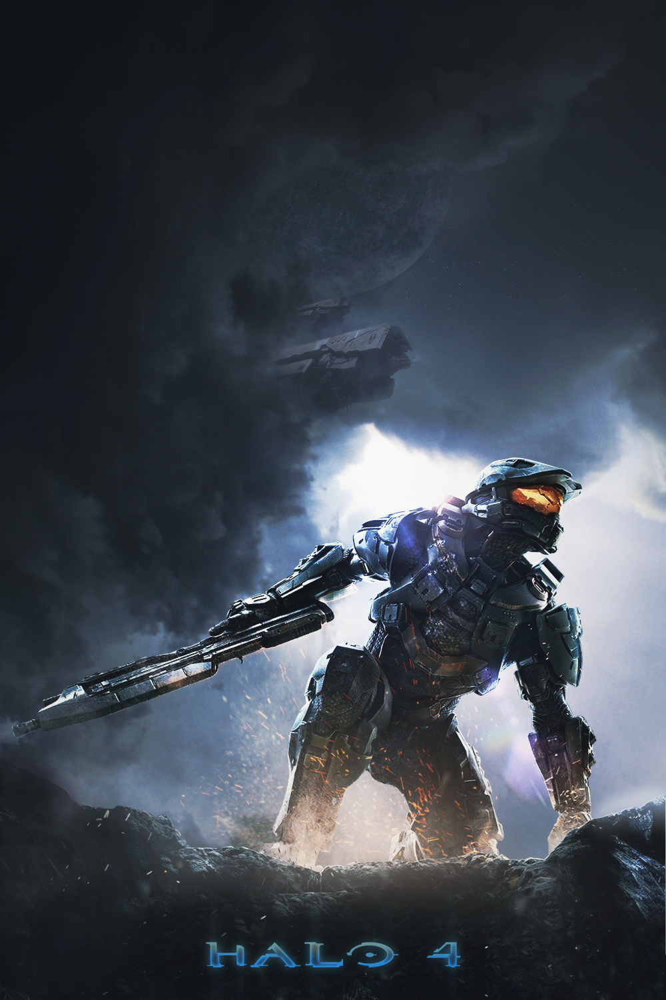
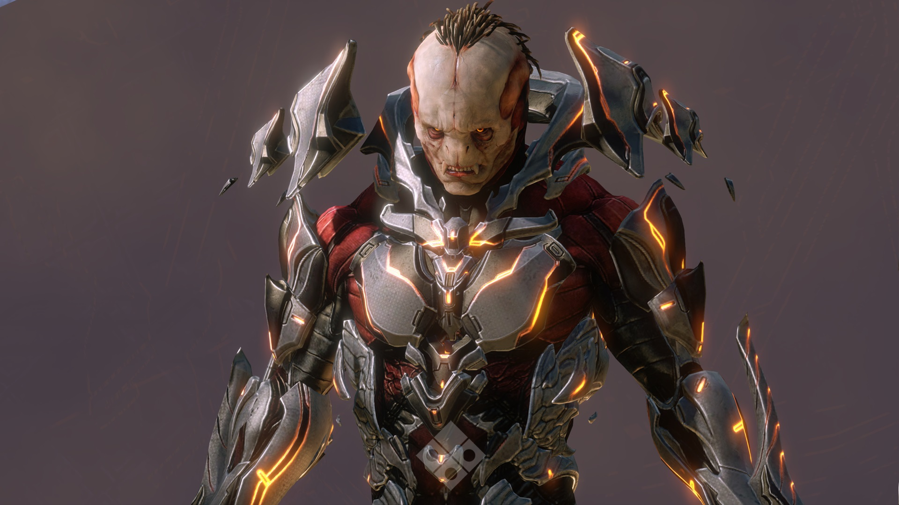
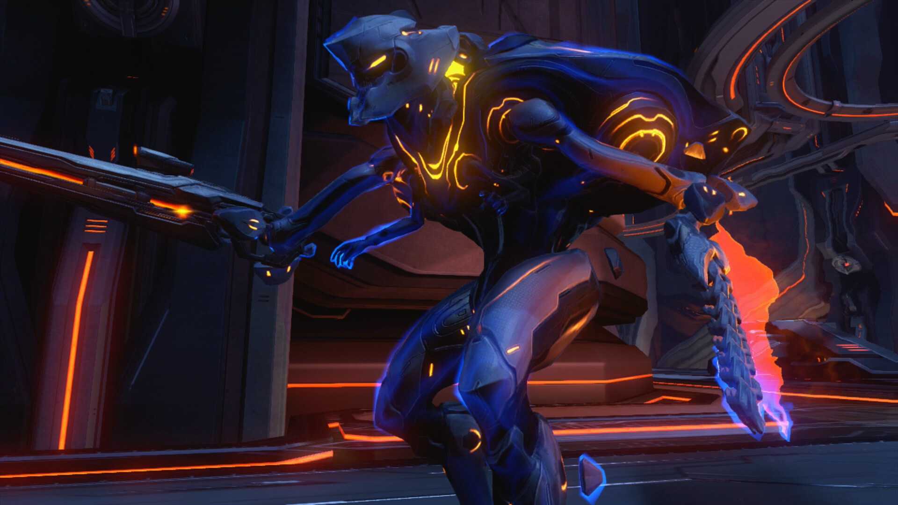

The Didact is an ancient Forerunner military commander who views humanity as a threat to the galaxy. In Halo 4, he seeks to use a device known as the Composer to digitize humans and turn them into mechanical Promethean soldiers.

The Prometheans are advanced mechanical warriors under the Didact’s control. They are composed of digitized beings and use powerful Forerunner technology to fight against Master Chief and the UNSC.
| Unit | Description | Combat Role |
|---|---|---|
| Knight | Heavily armored leader unit | Frontline assault |
| Crawler | Fast quadruped attacker | Close range swarm |
| Watcher | Floating support drone | Shielding and reviving |